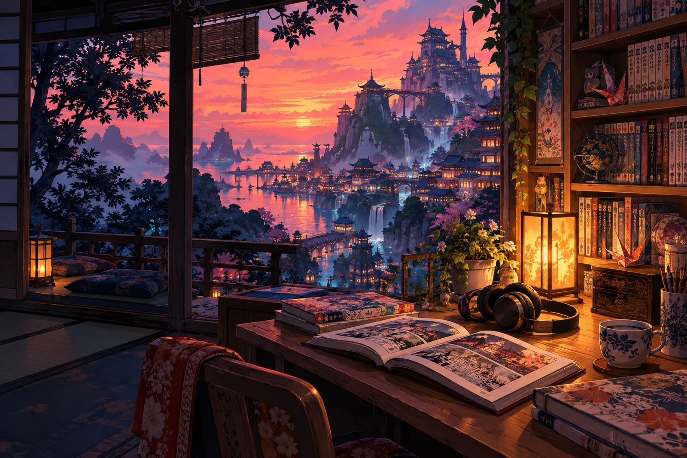

Tra pagine
e mondi.
Un episodio ancora. Un altro capitolo.
Le storie, i viaggi e la collezione di Xuthar.
- Anime
- —
- Manga e novel
- —
L'universo giapponese di Yume.
Un unico sito, tante costellazioni: anime, manga, editoria, cultura del Giappone, musica e storie. Scegli un mondo: i percorsi si aprono qui, senza cambiare portale.
✧ Tocca un pianeta per scoprire le sue sezioni
Universe & Nexus
Esplora le storie e le connessioni.
Da dove vuoi iniziare?
Anime
Serie, stagioni, voti e schede di approfondimento.
Esplora 02 / COLLEZIONEManga e novel
La collezione, le edizioni e i volumi posseduti.
Esplora 03 / NUOVE STORIESeasons
Le uscite stagionali e gli anime che vuoi vedere.
Esplora 04 / OGNI SETTIMANAEpisodi anime
Giorni, orari e piattaforme delle uscite.
Esplora 05 / IN LIBRERIAUscite manga e novel
Il calendario italiano e inglese e la lista acquisti.
Esplora 06 / I TUOI ASCOLTIJ-Pop e musica
Artisti, discografie, sigle e colonne sonore.
Esplora 07 / IN DIRETTATV e radio Giappone
Una finestra sul Giappone tra programmi e musica.
Esplora 08 / DA TENERE A PORTATALe mie liste
Da vedere, da comprare e i tuoi manga.
EsploraNon sai cosa guardare stasera?
Lascia scegliere a Yume un anime dalla lista Da vedere.
Sei grandi porte, un unico Yume.
 01 / TRADIZIONI
01 / TRADIZIONI
Yume Japan
Tradizioni, città, gastronomia e folklore.
Esplora 02 / MEMORIA
02 / MEMORIA
Chronos
La storia di anime e manga attraverso il tempo.
Esplora 03 / EDITORIA
03 / EDITORIA
Yume Magazine
Articoli, speciali e racconti dal mondo giapponese.
Esplora 04 / TUTTE LE IDOLS
04 / TUTTE LE IDOLS
Idols
Tutte le Idols in un solo luogo: Giappone, Asia, Young Stars, atlete, cosplay, creator e categorie 18+.
Esplora 05 / CONFRONTI
05 / CONFRONTI
Manga vs Anime
Le differenze tra le pagine e gli adattamenti animati.
Esplora 06 / ATLANTE
06 / ATLANTE
Yume Nexus
Franchise, autori, studi e connessioni tra opere.
EsploraCerca in tutto Yume.
Anime, manga, luoghi, rivista e percorsi dell'atlante, in un solo posto.
Inserisci almeno tre caratteri per cercare.
Per cercare artisti e performer reali, entra nell'archivio Idols ↗.